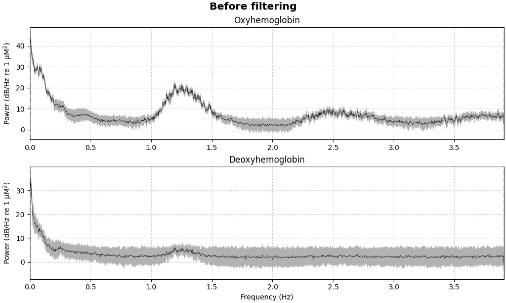
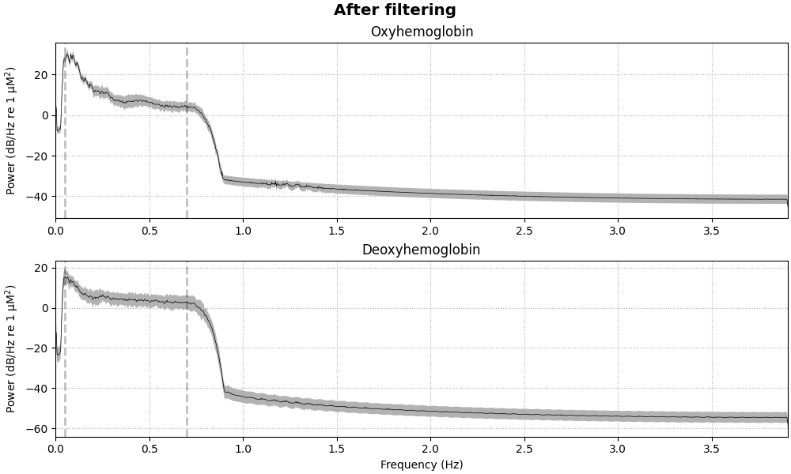
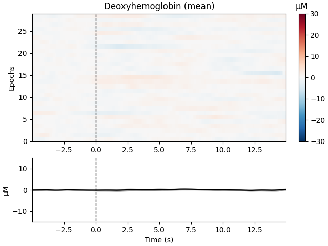
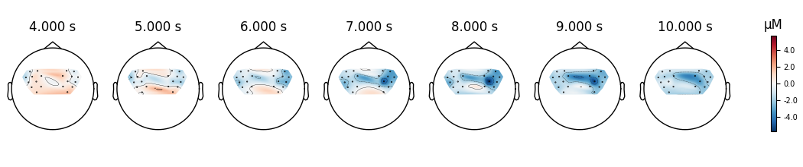
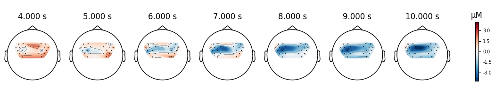

Note
Go to the end to download the full example code
Preprocessing functional near-infrared spectroscopy (fNIRS) data#
This tutorial covers how to convert functional near-infrared spectroscopy (fNIRS) data from raw measurements to relative oxyhaemoglobin (HbO) and deoxyhaemoglobin (HbR) concentration, view the average waveform, and topographic representation of the response.
Here we will work with the fNIRS motor data.
import numpy as np
import matplotlib.pyplot as plt
from itertools import compress
import mne
fnirs_data_folder = mne.datasets.fnirs_motor.data_path()
fnirs_cw_amplitude_dir = fnirs_data_folder / "Participant-1"
raw_intensity = mne.io.read_raw_nirx(fnirs_cw_amplitude_dir, verbose=True)
raw_intensity.load_data()
Loading /home/circleci/mne_data/MNE-fNIRS-motor-data/Participant-1
Reading 0 ... 23238 = 0.000 ... 2974.464 secs...
Providing more meaningful annotation information#
First, we attribute more meaningful names to the trigger codes which are stored as annotations. Second, we include information about the duration of each stimulus, which was 5 seconds for all conditions in this experiment. Third, we remove the trigger code 15, which signaled the start and end of the experiment and is not relevant to our analysis.
raw_intensity.annotations.set_durations(5)
raw_intensity.annotations.rename(
{"1.0": "Control", "2.0": "Tapping/Left", "3.0": "Tapping/Right"}
)
unwanted = np.nonzero(raw_intensity.annotations.description == "15.0")
raw_intensity.annotations.delete(unwanted)
Viewing location of sensors over brain surface#
Here we validate that the location of sources-detector pairs and channels are in the expected locations. Source-detector pairs are shown as lines between the optodes, channels (the mid point of source-detector pairs) are optionally shown as orange dots. Source are optionally shown as red dots and detectors as black.
subjects_dir = mne.datasets.sample.data_path() / "subjects"
brain = mne.viz.Brain(
"fsaverage", subjects_dir=subjects_dir, background="w", cortex="0.5"
)
brain.add_sensors(
raw_intensity.info,
trans="fsaverage",
fnirs=["channels", "pairs", "sources", "detectors"],
)
brain.show_view(azimuth=20, elevation=60, distance=400)
Channel types:: fnirs_cw_amplitude: 56
Selecting channels appropriate for detecting neural responses#
First we remove channels that are too close together (short channels) to detect a neural response (less than 1 cm distance between optodes). These short channels can be seen in the figure above. To achieve this we pick all the channels that are not considered to be short.
picks = mne.pick_types(raw_intensity.info, meg=False, fnirs=True)
dists = mne.preprocessing.nirs.source_detector_distances(
raw_intensity.info, picks=picks
)
raw_intensity.pick(picks[dists > 0.01])
raw_intensity.plot(
n_channels=len(raw_intensity.ch_names), duration=500, show_scrollbars=False
)
Converting from raw intensity to optical density#
The raw intensity values are then converted to optical density.
raw_od = mne.preprocessing.nirs.optical_density(raw_intensity)
raw_od.plot(n_channels=len(raw_od.ch_names), duration=500, show_scrollbars=False)
Evaluating the quality of the data#
At this stage we can quantify the quality of the coupling between the scalp and the optodes using the scalp coupling index. This method looks for the presence of a prominent synchronous signal in the frequency range of cardiac signals across both photodetected signals.
In this example the data is clean and the coupling is good for all channels, so we will not mark any channels as bad based on the scalp coupling index.
sci = mne.preprocessing.nirs.scalp_coupling_index(raw_od)
fig, ax = plt.subplots()
ax.hist(sci)
ax.set(xlabel="Scalp Coupling Index", ylabel="Count", xlim=[0, 1])
In this example we will mark all channels with a SCI less than 0.5 as bad (this dataset is quite clean, so no channels are marked as bad).
raw_od.info["bads"] = list(compress(raw_od.ch_names, sci < 0.5))
At this stage it is appropriate to inspect your data (for instructions on how to use the interactive data visualisation tool see Built-in plotting methods for Raw objects) to ensure that channels with poor scalp coupling have been removed. If your data contains lots of artifacts you may decide to apply artifact reduction techniques as described in Visualise NIRS artifact correction methods.
Converting from optical density to haemoglobin#
Next we convert the optical density data to haemoglobin concentration using the modified Beer-Lambert law.
raw_haemo = mne.preprocessing.nirs.beer_lambert_law(raw_od, ppf=0.1)
raw_haemo.plot(n_channels=len(raw_haemo.ch_names), duration=500, show_scrollbars=False)
Removing heart rate from signal#
The haemodynamic response has frequency content predominantly below 0.5 Hz. An increase in activity around 1 Hz can be seen in the data that is due to the person’s heart beat and is unwanted. So we use a low pass filter to remove this. A high pass filter is also included to remove slow drifts in the data.
raw_haemo_unfiltered = raw_haemo.copy()
raw_haemo.filter(0.05, 0.7, h_trans_bandwidth=0.2, l_trans_bandwidth=0.02)
for when, _raw in dict(Before=raw_haemo_unfiltered, After=raw_haemo).items():
fig = _raw.compute_psd().plot(average=True, picks="data", exclude="bads")
fig.suptitle(f"{when} filtering", weight="bold", size="x-large")
fig.subplots_adjust(top=0.88)
- 
- 
Filtering raw data in 1 contiguous segment
Setting up band-pass filter from 0.05 - 0.7 Hz
FIR filter parameters
---------------------
Designing a one-pass, zero-phase, non-causal bandpass filter:
- Windowed time-domain design (firwin) method
- Hamming window with 0.0194 passband ripple and 53 dB stopband attenuation
- Lower passband edge: 0.05
- Lower transition bandwidth: 0.02 Hz (-6 dB cutoff frequency: 0.04 Hz)
- Upper passband edge: 0.70 Hz
- Upper transition bandwidth: 0.20 Hz (-6 dB cutoff frequency: 0.80 Hz)
- Filter length: 1291 samples (165.248 s)
[Parallel(n_jobs=1)]: Done 17 tasks | elapsed: 0.0s
Effective window size : 262.144 (s)
Effective window size : 262.144 (s)
Extract epochs#
Now that the signal has been converted to relative haemoglobin concentration, and the unwanted heart rate component has been removed, we can extract epochs related to each of the experimental conditions.
First we extract the events of interest and visualise them to ensure they are correct.
events, event_dict = mne.events_from_annotations(raw_haemo)
fig = mne.viz.plot_events(events, event_id=event_dict, sfreq=raw_haemo.info["sfreq"])
fig.subplots_adjust(right=0.7) # make room for the legend
Used Annotations descriptions: ['Control', 'Tapping/Left', 'Tapping/Right']
Next we define the range of our epochs, the rejection criteria, baseline correction, and extract the epochs. We visualise the log of which epochs were dropped.
reject_criteria = dict(hbo=80e-6)
tmin, tmax = -5, 15
epochs = mne.Epochs(
raw_haemo,
events,
event_id=event_dict,
tmin=tmin,
tmax=tmax,
reject=reject_criteria,
reject_by_annotation=True,
proj=True,
baseline=(None, 0),
preload=True,
detrend=None,
verbose=True,
)
epochs.plot_drop_log()
Not setting metadata
90 matching events found
Setting baseline interval to [-4.992, 0.0] s
Applying baseline correction (mode: mean)
0 projection items activated
Using data from preloaded Raw for 90 events and 157 original time points ...
Rejecting epoch based on HBO : ['S4_D4 hbo']
Rejecting epoch based on HBO : ['S4_D4 hbo', 'S8_D8 hbo']
Rejecting epoch based on HBO : ['S4_D4 hbo']
Rejecting epoch based on HBO : ['S4_D4 hbo', 'S8_D8 hbo']
Rejecting epoch based on HBO : ['S1_D1 hbo', 'S3_D3 hbo', 'S4_D4 hbo', 'S7_D6 hbo', 'S7_D7 hbo', 'S8_D8 hbo']
Rejecting epoch based on HBO : ['S4_D4 hbo', 'S6_D8 hbo', 'S8_D8 hbo']
6 bad epochs dropped
View consistency of responses across trials#
Now we can view the haemodynamic response for our tapping condition. We visualise the response for both the oxy- and deoxyhaemoglobin, and observe the expected peak in HbO at around 6 seconds consistently across trials, and the consistent dip in HbR that is slightly delayed relative to the HbO peak.
epochs["Tapping"].plot_image(
combine="mean",
vmin=-30,
vmax=30,
ts_args=dict(ylim=dict(hbo=[-15, 15], hbr=[-15, 15])),
)
Not setting metadata
55 matching events found
No baseline correction applied
0 projection items activated
Not setting metadata
55 matching events found
No baseline correction applied
0 projection items activated
combining channels using "mean"
combining channels using "mean"
We can also view the epoched data for the control condition and observe that it does not show the expected morphology.
epochs["Control"].plot_image(
combine="mean",
vmin=-30,
vmax=30,
ts_args=dict(ylim=dict(hbo=[-15, 15], hbr=[-15, 15])),
)
- 
Not setting metadata
29 matching events found
No baseline correction applied
0 projection items activated
Not setting metadata
29 matching events found
No baseline correction applied
0 projection items activated
combining channels using "mean"
combining channels using "mean"
View consistency of responses across channels#
Similarly we can view how consistent the response is across the optode pairs that we selected. All the channels in this data are located over the motor cortex, and all channels show a similar pattern in the data.
fig, axes = plt.subplots(nrows=2, ncols=2, figsize=(15, 6))
clims = dict(hbo=[-20, 20], hbr=[-20, 20])
epochs["Control"].average().plot_image(axes=axes[:, 0], clim=clims)
epochs["Tapping"].average().plot_image(axes=axes[:, 1], clim=clims)
for column, condition in enumerate(["Control", "Tapping"]):
for ax in axes[:, column]:
ax.set_title("{}: {}".format(condition, ax.get_title()))
NOTE: pick_channels() is a legacy function. New code should use inst.pick(...).
NOTE: pick_channels() is a legacy function. New code should use inst.pick(...).
Plot standard fNIRS response image#
Next we generate the most common visualisation of fNIRS data: plotting both the HbO and HbR on the same figure to illustrate the relation between the two signals.
evoked_dict = {
"Tapping/HbO": epochs["Tapping"].average(picks="hbo"),
"Tapping/HbR": epochs["Tapping"].average(picks="hbr"),
"Control/HbO": epochs["Control"].average(picks="hbo"),
"Control/HbR": epochs["Control"].average(picks="hbr"),
}
# Rename channels until the encoding of frequency in ch_name is fixed
for condition in evoked_dict:
evoked_dict[condition].rename_channels(lambda x: x[:-4])
color_dict = dict(HbO="#AA3377", HbR="b")
styles_dict = dict(Control=dict(linestyle="dashed"))
mne.viz.plot_compare_evokeds(
evoked_dict, combine="mean", ci=0.95, colors=color_dict, styles=styles_dict
)
NOTE: pick_channels() is a legacy function. New code should use inst.pick(...).
NOTE: pick_channels() is a legacy function. New code should use inst.pick(...).
NOTE: pick_channels() is a legacy function. New code should use inst.pick(...).
NOTE: pick_channels() is a legacy function. New code should use inst.pick(...).
combining channels using "mean"
combining channels using "mean"
combining channels using "mean"
combining channels using "mean"
View topographic representation of activity#
Next we view how the topographic activity changes throughout the response.
times = np.arange(-3.5, 13.2, 3.0)
topomap_args = dict(extrapolate="local")
epochs["Tapping"].average(picks="hbo").plot_joint(
times=times, topomap_args=topomap_args
)
NOTE: pick_channels() is a legacy function. New code should use inst.pick(...).
No projector specified for this dataset. Please consider the method self.add_proj.
NOTE: pick_channels() is a legacy function. New code should use inst.pick(...).
Compare tapping of left and right hands#
Finally we generate topo maps for the left and right conditions to view the location of activity. First we visualise the HbO activity.
NOTE: pick_channels() is a legacy function. New code should use inst.pick(...).
NOTE: pick_channels() is a legacy function. New code should use inst.pick(...).
And we also view the HbR activity for the two conditions.
epochs["Tapping/Left"].average(picks="hbr").plot_topomap(times=times, **topomap_args)
epochs["Tapping/Right"].average(picks="hbr").plot_topomap(times=times, **topomap_args)
- 
- 
NOTE: pick_channels() is a legacy function. New code should use inst.pick(...).
NOTE: pick_channels() is a legacy function. New code should use inst.pick(...).
And we can plot the comparison at a single time point for two conditions.
fig, axes = plt.subplots(
nrows=2, ncols=4, figsize=(9, 5), gridspec_kw=dict(width_ratios=[1, 1, 1, 0.1])
)
vlim = (-8, 8)
ts = 9.0
evoked_left = epochs["Tapping/Left"].average()
evoked_right = epochs["Tapping/Right"].average()
evoked_left.plot_topomap(
ch_type="hbo", times=ts, axes=axes[0, 0], vlim=vlim, colorbar=False, **topomap_args
)
evoked_left.plot_topomap(
ch_type="hbr", times=ts, axes=axes[1, 0], vlim=vlim, colorbar=False, **topomap_args
)
evoked_right.plot_topomap(
ch_type="hbo", times=ts, axes=axes[0, 1], vlim=vlim, colorbar=False, **topomap_args
)
evoked_right.plot_topomap(
ch_type="hbr", times=ts, axes=axes[1, 1], vlim=vlim, colorbar=False, **topomap_args
)
evoked_diff = mne.combine_evoked([evoked_left, evoked_right], weights=[1, -1])
evoked_diff.plot_topomap(
ch_type="hbo", times=ts, axes=axes[0, 2:], vlim=vlim, colorbar=True, **topomap_args
)
evoked_diff.plot_topomap(
ch_type="hbr", times=ts, axes=axes[1, 2:], vlim=vlim, colorbar=True, **topomap_args
)
for column, condition in enumerate(["Tapping Left", "Tapping Right", "Left-Right"]):
for row, chroma in enumerate(["HbO", "HbR"]):
axes[row, column].set_title("{}: {}".format(chroma, condition))
fig.tight_layout()
NOTE: pick_channels() is a legacy function. New code should use inst.pick(...).
NOTE: pick_channels() is a legacy function. New code should use inst.pick(...).
Lastly, we can also look at the individual waveforms to see what is driving the topographic plot above.
fig, axes = plt.subplots(nrows=1, ncols=1, figsize=(6, 4))
mne.viz.plot_evoked_topo(
epochs["Left"].average(picks="hbo"), color="b", axes=axes, legend=False
)
mne.viz.plot_evoked_topo(
epochs["Right"].average(picks="hbo"), color="r", axes=axes, legend=False
)
# Tidy the legend:
leg_lines = [line for line in axes.lines if line.get_c() == "b"][:1]
leg_lines.append([line for line in axes.lines if line.get_c() == "r"][0])
fig.legend(leg_lines, ["Left", "Right"], loc="lower right")
NOTE: pick_channels() is a legacy function. New code should use inst.pick(...).
NOTE: pick_channels() is a legacy function. New code should use inst.pick(...).
Total running time of the script: (0 minutes 32.983 seconds)
Estimated memory usage: 25 MB